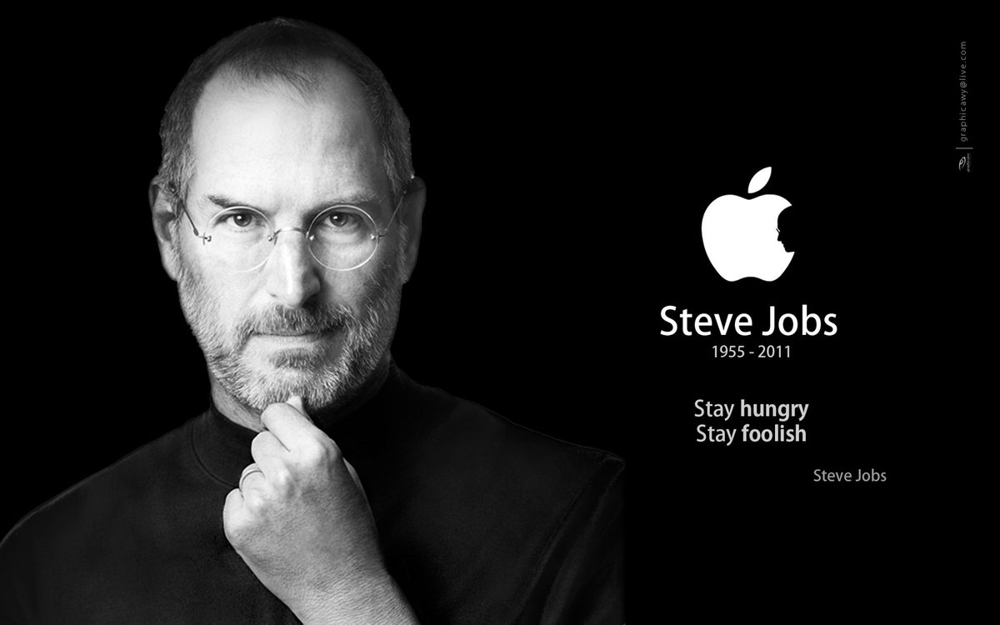

Steve Jobs

Tôi cho rằng anh không phù hợp với Apple và anh không nên là người điều hành nó nữa. Thực sự anh nên rời khỏi công ty đi. Tôi chưa từng thấy lo ngại cho Apple nhiều như bây giờ. Tôi lo ngại về anh đấy. Anh cũng chưa từng biết gì về điều hành cả.”
Đó là những lời lẽ được thốt ra từ Steve Jobs với một giọng nói căng thẳng nhưng đầy tự chủ. Vào ngày 24 tháng Năm năm 1985, vị doanh nhân được ca tụng nhiều nhất thời đại chúng ta là Steve Jobs đã chỉ định John Sculley, người được ông đích thân lựa chọn, giữ chức vụ CEO trong một cuộc họp nhân sự cấp cao tại phòng họp của ban giám đốc.
Hai năm trước, khi được hội đồng quản trị ủng hộ nhiệt liệt, Jobs đã đưa Sculley gia nhập vào đội ngũ Apple từ PepsiCo, nơi Sculley đang giữ chức chủ tịch. Nhưng mối quan hệ từng được giới truyền thông ca ngợi như “cặp bài trùng” của hai người đã hoàn toàn sụp đổ.
Jobs tiếp tục với giọng gay gắt hơn: “John, anh quản lý quá chuyên chế! Anh không hiểu gì về quy trình phát triển sản phẩm. Việc sản xuất anh cũng không biết nốt. Anh không rành về máy tính. Ngay cả mấy tay phó giám đốc cũng không tôn trọng anh. Năm đầu tiên, anh đã giúp xây dựng công ty, nhưng đến năm thứ hai thì anh đã làm tổn hại nó đấy.”
Đối với Jobs, đây là khởi đầu cho một kết thúc. Mọi nỗ lực của Jobs để hội đồng quản trị chống lại Sculley đã không diễn ra như mong đợi của ông. Ngược lại, họ quay sang ủng hộ Sculley, người giờ đây trở thành đối thủ của Jobs và tán thành quyết định loại bỏ ông khỏi vai trò quản lý hằng ngày. Khi bị giáng chức khỏi vị trí chủ tịch, Jobs buộc phải dọn ra khỏi văn phòng và chuyển sang địa điểm khác để “nghiên cứu về những chiến lược và cải tiến cho sản phẩm mới”. Bốn tháng sau, Jobs từ chức.
Những chuyện xảy ra với Jobs vào giữa thập niên 80 của thế kỷ XX là cơn ác mộng tồi tệ nhất của mọi doanh chủ: Công ty do bạn dốc hết mồ hôi, máu và nước mắt xây dựng đã bị tước khỏi tay bạn chỉ vì một “nhà quản lý chuyên nghiệp” được tuyển để giúp xây dựng công ty muốn bạn phải rời khỏi công ty; hoặc vì những nhà đầu tư bạn đã từng hết lòng tin tưởng trước đây lại nghĩ rằng công ty đã tăng trưởng vượt khỏi tầm quản lý của bạn...
Người ta thường nói khi chiến thắng thì mọi thứ thật dễ dàng, nhưng khi thất bại, con người mới bộc lộ hết bản chất của mình. Bị đẩy ra khỏi công ty do chính mình gây dựng, Jobs dĩ nhiên đã cảm thấy rất cay đắng, nhưng ông cũng là một người kiên cường tột bậc và luôn hết mình trong công việc.
Vào thời điểm đó, với những tổn thương sâu sắc đang gánh chịu trong lòng, Steve Jobs đã trả lời phỏng vấn rằng: “Tôi đã chọn sai người. Ông ta đã phá hủy tất cả những gì tôi đã xây dựng suốt mười năm qua, bắt đầu từ tôi. Nhưng đó không phải là điều đáng buồn nhất. Tôi sẽ vui vẻ rời khỏi Apple nếu công ty phát triển theo hướng tôi mong muốn. Tôi cảm giác như có ai đang đấm vào bụng và hạ gục tôi. Khi đó, tôi chỉ mới 30 tuổi và tôi muốn có cơ hội để tiếp tục tạo nên nhiều thứ khác.”
Bên cạnh Apple, Jobs từng thành lập một số công ty khác như Công ty máy tính NeXT Computer hay Hãng phim hoạt hình Pixar. Thế nhưng, giờ đây Jobs phải đứng ngoài lề của Apple và chứng kiến công ty sụp đổ. Jobs nói một cách chua xót: “Điều đang hủy hoại Apple không phải là sự kém phát triển mà là những giá trị trong công ty. John Sculley đã phá hỏng Apple bằng việc đưa những giá trị thối nát vào hệ thống điều hành và đầu độc những nhà quản lý khác. Ông ta loại bỏ những người không chịu thỏa hiệp và mang về những kẻ tệ hại rồi trả cho họ hàng chục triệu đô-la. Tất cả những gì chúng quan tâm là tiếng tăm và tiền bạc chứ không phải những giá trị đã tạo nên Apple – tạo ra những chiếc máy tính tuyệt vời cho người sử dụng.”
Thế nhưng, sự ra đi của Jobs vào năm 1985 đã tạo nên bước ngoặt cho một trong những cuộc trở lại ngoạn mục nhất trong lịch sử kinh doanh. Mọi diễn biến của câu chuyện này sánh ngang với bất kỳ tác phẩm nào của đại thi hào Shakespeare. Nó tựa như một câu chuyện cổ tích, một hành trình kinh doanh tưởng chừng không thể nào có thực.
Phải đến 11 năm sau Jobs mới thực sự quay về Apple. Trong quãng thời gian đó, những quyết định sai lầm liên tiếp của các vị giám đốc điều hành đã gần như đẩy công ty đến bờ vực phá sản. Năm 1996, khi Apple chỉ còn trong tình trạng thoi thóp thì Jobs mới được mời quay trở lại và giữ chức vụ quyền giám đốc điều hành.
Jobs kể rằng: “Đó là một thời điểm đầy chông gai vì chỉ còn khoảng 90 ngày nữa Apple sẽ phá sản. Khi tôi quay về, mọi thứ tồi tệ hơn những gì tôi tưởng tượng. Tôi cứ ngỡ rằng những người tài giỏi đều đã rời bỏ Apple. Nhưng tôi đã nhìn thấy những con người kỳ diệu, những con người tuyệt vời vẫn ở lại công ty. Tôi đã lịch thiệp hỏi họ rằng: ‘Sao các anh vẫn còn ở đây?’ Nhiều người trong số họ chỉ trả lời rất ngắn gọn: ‘Bởi vì sáu màu sắc này là cuộc sống của tôi.’ Đó là sáu màu sắc trong logo cũ của Apple. Điều đó cũng có nghĩa là ‘Tôi yêu tất cả những gì thuộc về Apple.’ Nó đã trở thành nguồn sức mạnh giúp tất cả chúng tôi làm việc hết mình để hồi sinh Apple.”
Những gì xảy ra sau đó đã đi vào lịch sử – một lịch sử hết sức nổi tiếng thời điểm này: thương hiệu Mac vươn đến đỉnh cao trong cả dòng máy tính xách tay và máy tính để bàn; sự ra đời đầy thành công của các đại lý của Apple cũng như những cái tên như Ipod, iTunes, iPhone và iPad. Từ một doanh nghiệp thua lỗ một tỷ đô-la mỗi năm, Apple đã chuyển mình và vươn lên thành một trong những tập đoàn siêu lợi nhuận và được ngưỡng mộ nhất trên toàn thế giới, với doanh thu hằng năm luôn vượt mức 100 tỷ đô-la.
Cũng từ đấy, Steve Jobs đã trở thành doanh chủ điển hình nhất nước Mỹ, được tôn vinh khắp nơi trên thế giới như một nhà chiến lược có tầm nhìn, một thiên tài và một vị cứu tinh doanh nghiệp. Jobs đáng giá hơn một triệu đô-la khi ông 23 tuổi; hơn mười triệu đô-la khi ông 24 tuổi và hơn 100 triệu đô-la khi ông 25 tuổi. Nhưng điều này chẳng hề quan trọng với ông. Đương thời, Steve Jobs, người chỉ nhận vỏn vẹn một đô-la mỗi năm trong cương vị chủ tịch của Apple, đã nâng giá trị bản thân lên hơn tám tỷ đô-la. Tháng Tám năm 2011, Jobs đã khiến toàn thế giới bất ngờ khi ông từ bỏ chức vị CEO ở tuổi 56 sau nhiều năm chịu đựng các vấn đề về sức khỏe. Năm 2004, ông được chẩn đoán mắc bệnh ung thư tuyến tụy, đã di căn đến gan và buộc phải tiến hành phẫu thuật cấy ghép gan. Dù Jobs không công bố rõ nguyên nhân từ chức nhưng rất nhiều người lo ngại rằng sức khỏe của ông đã suy giảm nghiêm trọng. Trong bức thư từ chức gửi hội đồng quản trị, Jobs đã viết: “Tôi luôn nói rằng nếu một ngày nào đó tôi không còn đủ sức gánh vác trách nhiệm cũng như sự kỳ vọng mà mọi người đặt lên vai một CEO của Apple thì chính tôi sẽ là người đầu tiên cho các bạn biết điều đó. Thật không may, ngày đó đã đến.”
Đối với Jobs, đó là một hành trình dài đầy kỳ diệu. Là một người được sinh ra trong thập niên 60 của thế kỷ trước, ông luôn bị ám ảnh về ký ức thời thơ ấu với những đêm trằn trọc trong suốt thời kỳ diễn ra Cuộc khủng hoảng hạt nhân Cuba năm 1962[27]: “Mỗi tối, tôi luôn lo sợ nếu mình ngủ quên thì sáng mai mình sẽ không còn thức dậy được nữa.” Ông cũng không quên ngày mình nghe tin Tổng thống John F. Kennedy bị ám sát khi đang đi qua bãi cỏ trong sân trường ở Mountain View, bang California. Lúc đó, Jobs mới có tám tuổi.
Cha của ông, Paul Jobs, là một thợ máy chưa tốt nghiệp trung học. Cha ông từng tháo rời một phần chiếc bàn làm việc của mình trong ga-ra để cho cậu con trai tập tành lắp ráp. Nhưng người đã hướng Jobs đến với các thiết bị điện tử chính là một kỹ sư làm việc tại Công ty Hewlett-Packard (thường viết tắt là HP), người sống cách gia đình Jobs vài căn. Nhờ vậy, Jobs đã nhận được công việc thời vụ vào mùa hè cho HP. Tại đây, ông đã gặp gỡ Steve Wozniak, một kỹ sư máy tính có vẻ nhàm chán nhưng lại cực kỳ am hiểu về công nghệ. Steve Wozniak cũng chính là người đồng sáng lập Apple sau này. Khi ấy, Jobs mới 16 tuổi, còn Wozniak đã 21.
Năm 1972, Jobs tốt nghiệp cấp ba và ghi danh vào Đại học Reed ở Portland, bang Oregon. Nhưng ông chỉ học được một học kỳ rồi lại bỏ ngang. Dù vậy, ông vẫn theo học các lớp kiểm toán tại trường thêm một thời gian. Trong thời gian này, ông phải ngủ nhờ trên sàn nhà căn hộ của những người bạn, kiếm tiền mua thức ăn bằng cách đổi vỏ lon Coca-Cola và đến ngôi đền Hare Krishna để xin những bữa ăn miễn phí. Mùa thu năm 1974, Jobs quay trở lại California, nhận công việc kỹ thuật viên tại Hãng làm game Atari và bắt đầu tham dự các cuộc họp của Câu lạc bộ máy tính Homebrew cùng với Wozniak.
Đến năm 1976, cặp đôi này đã thành lập Apple sau khi Wozniak lắp ráp thành công một chiếc máy tính cá nhân thô sơ. Họ đã ra mắt chiếc máy tính lắp ráp thủ công này tại Câu lạc bộ Homebrew vào tháng Năm và nhanh chóng nhận được đơn đặt hàng 50 máy từ một chủ tiệm máy tính địa phương với giá tiền 500 đô-la cho mỗi máy.
Vậy là một hợp đồng kinh doanh được thiết lập và là sự khởi đầu thuận lợi để Apple trở thành một trong những doanh nghiệp vĩ đại nhất nước Mỹ sau này.
Về việc kết nối những sự kiện lại với nhau
Tôi đã bỏ học chỉ sau sáu tháng đầu tiên theo học tại Đại học Reed, nhưng tôi vẫn ở lại thêm 18 tháng nữa trước khi tôi chính thức rời khỏi trường. Vậy tại sao tôi lại bỏ học?
Câu chuyện bắt đầu từ trước khi tôi chào đời. Khi sinh tôi ra, mẹ ruột của tôi vừa mới tốt nghiệp đại học và chưa kết hôn nên bà quyết định cho tôi làm con nuôi. Bà rất muốn tôi được những người có công ăn việc làm ổn định và đã tốt nghiệp đại học nuôi nấng tử tế và mọi thứ đã được sắp xếp để tôi được một cặp vợ chồng luật sư nhận nuôi. Lúc ấy, bà đã chuẩn bị tâm lý để giao tôi cho cặp vợ chồng luật sư đó. Tuy nhiên, đến phút chót, họ đã thay đổi ý định vì họ muốn một bé gái. Vì vậy, cha mẹ tôi bây giờ, lúc đó đang nằm trong danh sách chờ đợi, đã nhận được cuộc gọi vào lúc nửa đêm: “Chúng tôi có một bé trai mới sinh chưa có ai nhận. Ông bà có muốn nhận nuôi cháu không?” Họ nói: “Ồ, thật tuyệt.” Sau đó, mẹ ruột của tôi đã phát hiện người nhận nuôi tôi chưa bao giờ tốt nghiệp đại học, thậm chí cha tôi bây giờ còn chưa tốt nghiệp cấp ba nên bà từ chối ký vào giấy tờ giao nhận con nuôi. Nhưng vài tháng sau, bà đã mủi lòng và nhượng bộ khi cha mẹ nuôi tôi hứa rằng sau này nhất định sẽ cho tôi vào đại học.
Mười bảy năm sau, tôi thực sự bước chân vào giảng đường đại học. Nhưng tôi lại dại dột chọn một trường thuộc hàng đắt đỏ gần như ngang bằng Đại học Stanford. Cha mẹ nuôi của tôi, những người thuộc tầng lớp lao động tay chân, đã phải dùng toàn bộ số tiền dành dụm để đóng học phí cho tôi. Sau sáu tháng học tập, tôi không thấy lợi ích gì từ việc đó cả. Tôi không biết mình muốn làm gì với cuộc đời của mình và cũng không có niềm tin rằng trường đại học sẽ giúp tôi tìm ra câu trả lời. Tôi lại còn tiêu hết số tiền mà cha mẹ tôi đã phải dành dụm cả đời. Thế là tôi quyết định bỏ học và tin rằng mọi chuyện rồi sẽ ổn thôi. Đó là một quyết định thật đáng sợ. Nhưng bây giờ nhìn lại, tôi nhận ra nó là một trong những quyết định đúng đắn nhất tôi từng thực hiện. Kể từ giây phút ấy, tôi không còn phải chịu đựng những môn học bắt buộc mà tôi không có hứng thú nữa và bắt đầu theo học các môn mà tôi cảm thấy thú vị hơn nhiều.
Nhưng mọi chuyện sau đó lại không dễ chịu chút nào cả. Tôi không được ở trong ký túc xá, vì thế tôi đã phải ngủ nhờ dưới sàn nhà trong phòng của bạn bè. Tôi đổi mỗi vỏ lon Coca-Cola lấy năm xu để có tiền mua thức ăn và phải đi bộ hơn 11km băng qua thành phố vào mỗi tối Chủ nhật để nhận một bữa ăn miễn phí tại đền thờ Hare Krishna. Nhưng tôi thích thế. Chính những gì tôi trải qua trong quá trình đi theo sự tò mò và trực giác của mình đã trở thành những điều vô giá cho tôi sau này.
Để tôi cho anh một ví dụ. Lúc đó, Đại học Reed có lẽ là trường có khóa học thư pháp chất lượng nhất trong cả nước. Mọi mẫu chữ trên các áp-phích hay mọi nhãn tên trên các ngăn kéo khắp khuôn viên trường đều được viết kiểu thư pháp rất đẹp. Vì tôi đã bỏ học và không phải lên lớp nữa nên tôi quyết định tham gia khóa học thư pháp. Tôi đã tìm hiểu về các kiểu chữ serif và sans serif[28], về cách đặt khoảng cách khác nhau giữa các mẫu chữ và kỹ thuật trình bày một bản in có nhiều kiểu chữ đẹp. Những kiểu chữ đó rất đẹp, mang chất cổ kính, vừa sắc sảo vừa tinh tế theo một cách mà khoa học không thể hiểu hết được và tôi thấy chúng thật hấp dẫn.
Những kiến thức này tưởng chừng như chẳng có ý nghĩa gì đối với cuộc sống của tôi. Tôi chưa bao giờ nghĩ đến việc có thể ứng dụng những điều này vào cuộc đời mình. Thế nhưng 10 năm sau, khi chúng tôi đang thiết kế chiếc máy tính Macintosh đầu tiên, tất cả mọi thứ đã quay trở lại với tôi. Chúng tôi đã áp dụng toàn bộ những kiến thức này vào việc thiết kế thật nhiều kiểu chữ cho chiếc máy tính Mac. Đó là chiếc máy tính đầu tiên có các kiểu chữ rất đẹp. Nếu năm xưa tôi không học khóa thư pháp thì chiếc máy tính Mac sẽ không bao giờ có những kiểu chữ được xếp đặt cân đối như vậy. Từ khi Windows bắt chước Mac thì chiếc máy tính cá nhân nào cũng có những kiểu chữ đó. Nếu không bỏ học, tôi đã không bao giờ học lớp thiết kế chữ này và các máy tính cá nhân có thể cũng không có được những mẫu chữ tuyệt diệu như bây giờ. Dĩ nhiên, khi còn đi học tôi chưa thể hình dung được những điều này. Nhưng mười năm sau nhìn lại thì tôi đã nhận ra lợi ích của khóa học đó rất rõ.
Anh không thể xâu chuỗi các sự kiện trong tương lai được; anh chỉ có thể làm được điều đó với những sự kiện trong quá khứ thôi. Vì vậy, anh phải có niềm tin rằng các điểm ấy bằng cách nào đó sẽ tự kết nối trong tương lai. Anh phải tin tưởng vào một điều gì đó, có thể là sự quyết tâm, số phận, cuộc sống, thuyết nhân quả hay đại loại thế. Phương pháp này chưa bao giờ làm tôi thất vọng và nó đã tạo nên tất cả những sự khác biệt trong cuộc đời tôi.
Về việc đổi mới
Anh hãy cố gắng tiếp cận những điều tốt đẹp nhất mà con người đã tạo nên và sau đó hãy vận dụng những điều đó vào những thứ anh đang thực hiện. Họa sĩ Picasso từng nói rằng: “Người biết sao chép là một họa sĩ giỏi nhưng người biết đánh cắp là một họa sĩ vĩ đại.” Chúng ta vẫn luôn xấu hổ về việc ăn cắp những ý tưởng tuyệt vời. Thế nhưng, một phần tạo nên chiếc máy tính Macintosh vĩ đại chính là những người sáng tạo ra nó – những nhạc sĩ, nhà thơ, các họa sĩ, các nhà sử học, sinh thái học – những người đồng thời cũng là những nhà khoa học máy tính hàng đầu thế giới.
Về các mô hình kinh doanh
Mô hình cho doanh nghiệp của tôi chính là nhóm nhạc The Beatles. Họ là bốn chàng trai có thể kiểm soát được khuynh hướng tiêu cực của nhau; họ cân bằng lẫn nhau. Khi kết hợp lại thì khả năng của cả nhóm luôn cao hơn khả năng của mỗi người cộng lại. Những điều tuyệt vời trong kinh doanh không thể thực hiện bởi một người mà chúng là kết quả của cả một nhóm người.
Về các khả năng mới
Có không ít người suy nghĩ tuyệt vọng rằng chẳng bao giờ có khả năng nào mới mẻ cả, nhưng tôi thì nghĩ ngược lại. Lý do là vì tâm trí con người luôn nhìn thế giới xung quanh theo một lối mòn, điều đó là sự thật và sẽ luôn là vậy. Tôi luôn cho rằng cái chết là một phát minh vĩ đại nhất của cuộc đời. Tôi chắc chắn rằng cuộc sống lúc đầu đã phát triển mà không hề có cái chết và chợt thấy rằng nếu không có cái chết, cuộc sống không thể tốt được vì nó không còn chỗ để nhường cho lớp trẻ. Chúng ta không biết được thế giới 50 năm trước như thế nào. Chúng ta cũng không biết được thế giới 20 năm trước ra sao. Chúng ta chỉ thấy ngày hôm nay mà không có bất kỳ định kiến hay mộng tưởng gì. Chúng ta không hài lòng với những thành tựu của 30 năm qua. Chúng ta không hài lòng vì tình trạng hiện tại không theo đúng lý tưởng. Nếu không có cái chết thì sẽ không có sự tiến bộ nào cả.
Một trong những điều thường xảy ra trong một tổ chức cũng như với con người, đó là họ thường bị đóng khung trong cách nhìn nhận thế giới xung quanh và dễ dàng thỏa mãn với mọi thứ. Thế giới luôn thay đổi và không ngừng tiến hóa; những tiềm năng mới luôn trỗi dậy nhưng những người sống mòn không thể nhìn thấy nó. Điều đó trở thành ưu thế lớn nhất cho các công ty khởi nghiệp. Những quan điểm lỗi thời hầu hết xuất phát từ các công ty lớn. Thêm vào đó, trong các công ty lớn thường không có cầu nối giữa những người có thể tạo ra sự đổi mới và những người có quyền đưa ra quyết định cho công ty.
Trong công ty, những nhân viên ở vị trí thấp hơn có thể nhìn thấy trước những thay đổi sắp xảy ra, nhưng đôi khi phải mất đến mười năm các nhà điều hành mới nghe được những đề xuất của họ và thực hiện chúng. Ngay cả trong trường hợp khi cấp dưới đang làm những điều đúng đắn thì thường cấp trên lại phá hoại bằng cách nào đó. IBM và việc kinh doanh máy tính cá nhân là một ví dụ điển hình cho điều này. Tôi nghĩ rằng con người không cần phải giải quyết việc bị đóng khung trong cái nhìn hạn hẹp về thế giới, vì như thế thì các công ty trẻ và những người trẻ tuổi mới có cơ hội để đổi mới.
Về tinh thần doanh chủ
Rất nhiều người đến gặp và nói với tôi: “Tôi muốn trở thành một doanh chủ.” Tôi hỏi lại họ: “Tuyệt vời lắm! Vậy ý tưởng của bạn là gì?” Khi họ trả lời: “Tôi vẫn chưa nghĩ ra”, tôi chân thành khuyên họ: “Tôi nghĩ bạn nên đi tìm một công việc như phục vụ bàn hay đại loại như thế cho đến khi bạn tìm thấy niềm đam mê thực sự về kinh doanh, vì muốn làm doanh chủ thì sẽ phải làm việc cật lực đấy.” Tôi tin rằng một nửa những gì tạo nên sự khác biệt giữa những doanh chủ thành công và những người không thành công đơn giản chỉ là sự kiên trì.
Việc này thật sự không đơn giản đâu. Anh phải đầu tư rất nhiều điều trong cuộc sống vào việc quản lý một doanh nghiệp. Có những thời điểm rất khắc nghiệt mà tôi nghĩ rằng hầu hết mọi người đều bỏ cuộc khi vấp phải. Tôi không trách họ. Việc này thực sự khó khăn và anh phải dành cả cuộc đời cho nó. Nếu anh đã có gia đình và lại đang điều hành những ngày đầu tiên của công ty, tôi không thể tưởng tượng nổi anh có thể xoay sở như thế nào. Tôi nghĩ rằng anh sẽ sắp xếp được thôi nhưng sẽ rất khó khăn. Anh sẽ phải hoạt động một ngày 18 tiếng và liên tục suốt cả tuần trong một thời gian dài. Trừ khi anh có niềm đam mê lớn lao với công việc, nếu không anh sẽ không thể chịu đựng nổi. Anh sẽ từ bỏ. Vì vậy, anh phải có một ý tưởng, hoặc một vấn đề hay một sai lầm cần khắc phục khiến anh quyết tâm thực hiện. Nếu không, anh sẽ không có nổi sự kiên trì để cống hiến hết mình. Tôi nghĩ rằng một nửa trận chiến nằm ở niềm đam mê này.
Về mục tiêu cuối cùng của ông
Mục tiêu của chúng tôi là tạo ra những chiếc máy tính tốt nhất thế giới, tạo ra những sản phẩm mà chúng tôi có thể tự hào bán ra thị trường cũng như tự hào giới thiệu với gia đình và bạn bè mình. Chúng tôi muốn làm điều đó với mức chi phí thấp nhất có thể. Nhưng tôi phải nói với anh rằng, có một số điều trong ngành công nghiệp mà chúng tôi sẽ không thể tự hào khi giao sản phẩm và không thể tự hào giới thiệu với gia đình và bạn bè. Chúng tôi không thể làm những sản phẩm như vậy. Chúng tôi không thể giao cho khách hàng những thứ đồ bỏ đi được. Vì vậy, có những ngưỡng cửa mà chúng tôi cũng không thể vượt qua vì chúng tôi không muốn. Chúng tôi muốn làm ra những chiếc máy tính tốt nhất trong ngành công nghiệp này. Điều quan trọng là ngành công nghiệp cũng có nhu cầu cho chúng. Anh sẽ nhận thấy rằng sản phẩm của chúng tôi không phải là quá đắt. Anh hãy ra ngoài, khảo sát giá sản phẩm của các đối thủ cạnh tranh với chúng tôi và thêm vào những phụ phẩm để chúng có thể hoạt động tốt nhất. Trong một số trường hợp anh sẽ thấy những sản phẩm đó còn đắt hơn sản phẩm của chúng tôi nhiều. Nhưng điều khác biệt ở đây là chúng tôi sẽ không đem đến cho anh một sản phẩm tệ hại.
Về việc nghiên cứu thị trường và những chuyên gia tư vấn
Chúng tôi không làm nghiên cứu thị trường và cũng không thuê các chuyên gia tư vấn. Trong suốt mười năm qua, nguồn tư vấn duy nhất tôi từng thuê là một công ty phân tích chiến lược bán lẻ trước đây của Công ty Gateway. Tôi không muốn phạm phải những sai lầm tương tự như họ (Gateway) khi mở cửa các chuỗi đại lý của Apple. Nhưng chúng tôi không bao giờ muốn thuê chuyên gia tư vấn. Chúng tôi chỉ muốn tạo ra những sản phẩm tuyệt vời.
Chúng tôi tạo ra ứng dụng kho nhạc trên iTunes vì chúng tôi cho rằng sẽ rất tuyệt vời nếu khách hàng có thể mua nhạc trên thiết bị điện tử, chứ không phải vì chúng tôi đã có sẵn kế hoạch tái định hình ngành công nghiệp âm nhạc. Chuyện đó cũng giống như việc anh viết trên tường rằng cuối cùng tất cả âm nhạc sẽ được phân phối theo hướng điện tử hóa. Tại sao lại phải trả nhiều tiền để mua nhạc chứ? Ngành công nghiệp âm nhạc luôn có lợi nhuận rất cao. Việc gì phải trả cả đống tiền vì anh có thể chuyển nhạc qua thiết bị điện tử một cách dễ dàng.
Về cách tuyển dụng nhân sự cho Apple
Khi tôi tuyển dụng một nhân viên cao cấp, tôi luôn đánh cược vào năng lực của ứng cử viên. Họ phải thực sự thông minh. Nhưng điều quan trọng nhất với tôi là họ có yêu thích Apple không. Nếu có tình yêu công việc, mọi thứ khác sẽ ổn thỏa. Họ sẽ muốn làm những gì tốt nhất cho Apple chứ không phải những điều tốt nhất cho họ, cho Steve hay cho bất cứ ai khác.
Tuyển dụng thật sự rất khó khăn. Nó giống như việc mò kim dưới đáy bể vậy. Chúng tôi phải đích thân thực hiện và dành nhiều thời gian cho nó. Cả đời tôi có thể đã tham gia tuyển dụng hơn 5.000 người. Có thể nói, tôi rất nghiêm túc trong việc tuyển dụng. Anh không thể biết hết từng ứng viên chỉ trong một giờ phỏng vấn. Đến cuối cùng anh vẫn dựa vào trực giác của mình. Tôi cảm thấy thế nào về con người này? Họ sẽ ra sao khi đương đầu với thử thách? Tại sao họ lại ở đây? Tôi thường hỏi tất cả mọi người rằng: ‘Tại sao bạn lại đến đây hôm nay?’ Cái ta mong chờ không phải là câu trả lời của họ mà là những hàm ý trong câu trả lời đó.
Về tình yêu và sự mất mát.
Tôi đã may mắn sớm tìm thấy điều mình thật sự yêu thích. Woz (Woznick) và tôi lập ra Apple trong nhà để xe của bố mẹ tôi khi tôi mới 20 tuổi. Cả hai đã làm việc rất chăm chỉ và trong vòng mười năm, Apple đã phát triển từ hai người trong một nhà để xe trở thành một công ty trị giá hai tỷ đô-la với hơn 4.000 nhân viên. Trước năm tôi bước sang tuổi 30, chúng tôi đã cho ra đời một kiệt tác – máy tính Macintosh. Sau đó, tôi bị đuổi việc. Làm sao anh có thể bị đuổi khỏi công ty của chính mình cơ chứ? Khi Apple phát triển, chúng tôi đã tuyển một người mà tôi nghĩ rằng có đủ tài năng để cùng điều hành công ty với mình. Trong năm đầu, mọi thứ đều thuận buồm xuôi gió. Nhưng rồi những định hướng tương lai của chúng tôi bắt đầu khác biệt và cuối cùng chúng tôi rơi vào tranh cãi. Khi đó, hội đồng quản trị đã đứng về phía anh ta. Tôi đã rời khỏi công ty lúc 30 tuổi và đã ra đi một cách rất công khai. Tâm huyết của cả một quãng đời trưởng thành của tôi đã biến mất và tôi thật sự cảm thấy suy sụp vì điều đó.
Thật sự tôi không biết phải làm gì trong vài tháng sau đó. Tôi cảm thấy mình đã làm cho các thế hệ doanh nhân đi trước thất vọng – tôi đã đánh rơi ngọn đuốc khi nó được truyền đến tay mình. Tôi đã gặp David Packard và Bob Noyce để xin lỗi vì đã làm hỏng mọi thứ. Tôi là một điển hình của sự thất bại trong mắt mọi người và thậm chí tôi còn nghĩ đến việc chạy trốn khỏi Thung lũng Silicon. Nhưng một điều gì đó bắt đầu trỗi dậy trong tôi: Tôi vẫn yêu những gì tôi đã làm. Những biến động ở Apple cũng không thể lay chuyển tình yêu trong tôi dù chỉ một chút. Tôi đã bị ruồng bỏ, nhưng tôi vẫn yêu công việc của mình. Và thế là tôi quyết định làm lại từ đầu.
Lúc đó, tôi đã không nhận thức được rằng việc bị sa thải khỏi Apple là điều tốt nhất từng xảy đến với tôi. Áp lực thành công đã được trút bỏ, thay vào đó là sự nhẹ nhàng của một người khởi đầu từ bàn tay trắng. Điều này đã giải phóng tôi hoàn toàn để tôi có thể bước vào thời kỳ sáng tạo huy hoàng nhất cuộc đời mình.
Trong 5 năm tiếp theo, tôi mở một công ty tên là NeXT, rồi thêm một công ty khác là Pixar. Tôi cũng đã đem lòng yêu Laurene, một người phụ nữ tuyệt vời, người sau này đã trở thành bạn đời của tôi. Pixar đã tạo ra Toy Story, bộ phim hoạt hình đầu tiên trên thế giới được đồ họa trên máy tính và giờ đây đã trở thành hãng phim hoạt hình thành công nhất thế giới. Trong một sự kiện mang tính bước ngoặt, Apple đã mua lại NeXT và tôi trở lại Apple, mang theo những công nghệ của NeXT để tái sinh Apple một lần nữa. Tôi và Laurene cũng đã xây dựng nên một gia đình tuyệt vời.
Tôi tin chắc rằng những điều kỳ diệu trên sẽ không xảy ra nếu tôi không bị sa thải khỏi Apple. Đó là một liều “thuốc đắng dã tật”. Đôi khi cuộc đời sẽ ném đá vào anh nhưng anh đừng vội mất niềm tin trong cuộc sống. Tôi tin rằng điều duy nhất đã tiếp sức cho tôi chính là tình yêu với những việc tôi làm. Quan trọng là anh phải tìm thấy những gì mình yêu thích. Điều đó đúng trong cả sự nghiệp lẫn tình yêu. Công việc chiếm một phần lớn của cuộc đời anh nên cách duy nhất để anh thực sự cảm thấy thỏa mãn là làm tốt công việc của mình. Và cách duy nhất để làm tốt công việc là anh phải yêu những gì anh đang làm. Nếu anh chưa tìm thấy nó, hãy tiếp tục tìm kiếm. Đừng an phận. Tất cả tùy thuộc vào trái tim anh, anh sẽ biết khi bạn tìm thấy nó. Giống như bất kỳ mối quan hệ tuyệt vời nào, công việc đó sẽ tốt đẹp thêm theo năm tháng. Vì vậy, hãy cứ liên tục tìm kiếm. Đừng an phận.
Về cái chết.
Khi 17 tuổi, tôi đã đọc được một câu danh ngôn thế này: “Nếu bạn sống mỗi ngày như ngày cuối cùng của đời mình, đến một ngày nào đó bạn sẽ thấy đó là điều đúng đắn.” Câu danh ngôn này đã gây ấn tượng mạnh với tôi và kể từ đó, trong suốt 33 năm qua, mỗi sáng tôi luôn nhìn vào gương và tự hỏi: “Nếu hôm nay là ngày cuối cùng của đời mình, liệu mình có muốn làm những việc hôm nay mình sẽ làm không?” Và khi câu trả lời là “Không” trong nhiều ngày liên tiếp, tôi biết mình cần thay đổi điều đó.
Việc luôn nhớ rằng một ngày nào đó mình sẽ chết là một bí quyết quan trọng giúp tôi tạo ra những cơ hội lớn trong cuộc đời. Hầu hết mọi thứ – mọi kỳ vọng, mọi niềm kiêu hãnh, mọi sợ hãi, xấu hổ hay thất bại – đều sẽ biến mất khi đối diện với cái chết và chỉ còn lại những điều thật sự quan trọng. Luôn nhớ rằng mình sẽ chết là cách tốt nhất để tránh sa vào cái bẫy của việc nghĩ rằng mình có điều gì đó để mất. Thật sự thì không có điều gì để mất đâu. Chẳng có lý do gì để không nghe theo sự mách bảo của trái tim mình cả.
Năm 2004, tôi được chẩn đoán mắc bệnh ung thư. Tôi đã phải đi chụp cắt lớp từ 7 giờ 30 phút sáng và kết quả cho thấy rõ ràng tôi có một khối u ở tuyến tụy. Thậm chí, tôi còn không biết tuyến tụy là gì. Các bác sĩ nói với tôi rằng đó gần như là một loại ung thư không chữa được và tôi chỉ còn sống được từ ba đến sáu tháng nữa thôi. Bác sĩ khuyên tôi về nhà thu xếp mọi chuyện ổn thỏa. Đây là cách mà bác sĩ ngụ ý rằng “Hãy lo hậu sự đi”. Điều đó có nghĩa là trong vòng vài tháng ngắn ngủi còn lại, hãy nói với con cái của anh những gì mà anh dự định sẽ nói với chúng trong mười năm tới. Điều đó cũng có nghĩa là anh phải đảm bảo mọi thứ đã được sắp xếp ổn thỏa và chu đáo nhất cho gia đình anh. Điều đó cũng có nghĩa là anh phải nói lời từ biệt cuối cùng.
Cả ngày hôm ấy tôi chỉ nghĩ đến những chẩn đoán của bác sĩ. Tối đó, tôi còn phải khám lại. Người ta cho đèn nội soi vào cổ họng, xuống dạ dày và ruột non, lấy kim chích vào tuyến tụy để lấy ra một số tế bào từ khối u. Lúc đó, tôi rất bình thản. Nhưng vợ tôi kể lại khi các bác sĩ soi các tế bào dưới kính hiển vi, họ đã reo lên vì phát hiện ra đây là một dạng rất hiếm của ung thư tuyến tụy và có thể chữa được bằng phẫu thuật. Tôi đã được phẫu thuật và thật may bây giờ thì tôi khỏe rồi.
Đấy là lần gần nhất tôi đối mặt với cái chết và tôi hy vọng đó vẫn sẽ là lần gần nhất trong vài chục năm tới. Sau khi trải qua điều đó, bây giờ tôi có thể nói với anh điều này.
Không ai muốn chết cả. Ngay cả những người khao khát muốn lên thiên đường cũng không muốn chết chỉ để được tới đó. Cái chết là đích đến cuối cùng của tất cả chúng ta. Không ai có thể trốn thoát được nó. Đó là điều nên có bởi lẽ cái chết chính là phát minh tuyệt vời nhất của sự sống. Nó là tác nhân thay đổi cuộc đời. Nó loại bỏ những cái cũ để mở đường cho cái mới. Ngay bây giờ, cái mới chính là các anh, nhưng không lâu sau, các anh sẽ trở thành cái cũ và sẽ bị loại bỏ. Xin lỗi vì đã bi kịch hóa chúng, nhưng đó là sự thật.
Thời gian của anh là hữu hạn nên đừng phí phạm nó bằng cách sống cuộc đời của bất kỳ ai khác. Đừng mắc kẹt trong những giáo điều và suy nghĩ của người khác. Đừng để những ý kiến ồn ào xung quanh đánh chìm tiếng nói bên trong anh. Điều quan trọng nhất là hãy dũng cảm đi theo trái tim và trực giác của anh. Chúng biết anh thực sự muốn gì. Mọi điều còn lại chỉ là thứ yếu mà thôi.